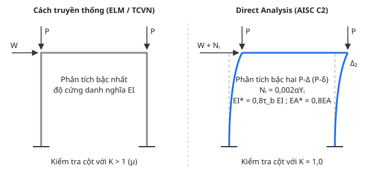

Bài 11.1. Ổn định khung theo AISC Stability of steel frames (AISC 360-10 Section C1)
Khung nhà xưởng là khung tự do: lực dọc trong cột nhân với chuyển vị ngang sinh thêm mô men. AISC 360-10 yêu cầu đưa hiệu ứng này vào ngay bước phân tích nội lực.
- Phân biệt hiệu ứng $P$-$\Delta$ (chuyển vị ngang của nút) và $P$-$\delta$ (độ cong của thanh).
- Kể được 5 yếu tố mà phân tích ổn định theo AISC 360-10 Mục C1 phải kể đến.
1. Tình huống
Nhà máy DNP có khung nhịp 54 m, cột cao 9 m, chân cột khớp. Dưới gió ngang, đỉnh cột chuyển vị vài chục milimét trong khi cột vẫn mang lực dọc từ mái. Theo TCVN, kỹ sư bù hiệu ứng này bằng hệ số $\mu$ lớn hơn 1. Theo AISC 360-10, bài toán được giải theo cách khác: đưa thẳng vào mô hình SAP2000.
2. Nội dung chính

Cơ sở lý thuyết
Khung nhà xưởng là khung tự do: chuyển vị ngang của đỉnh cột kéo theo mô men phụ $P\Delta$. Cột còn có độ cong ban đầu (hiệu ứng $P\delta$). Phân tích bậc nhất bỏ qua hai hiệu ứng này. Cách truyền thống bù lại bằng hệ số chiều dài tính toán $K > 1$, như $\mu$ trong TCVN 5575:2024 Bảng 32.
AISC 360-10 Mục C1 yêu cầu phân tích ổn định phải kể đến:
- biến dạng uốn, cắt, dọc trục của cấu kiện;
- hiệu ứng bậc hai $P$-$\Delta$ và $P$-$\delta$;
- sai lệch hình học ban đầu;
- giảm độ cứng do chảy dẻo cục bộ và ứng suất dư;
- sai số độ cứng, độ bền.
Direct Analysis Method (Mục C2) đưa các yếu tố 3 và 4 thẳng vào mô hình phân tích. Nhờ vậy, khi kiểm tra cấu kiện được lấy $K = 1{,}0$ cho mọi cột (Mục C3).
3. Lỗi thường gặp
- Chỉ chạy phân tích tuyến tính rồi dùng $K = 1$: bỏ qua hoàn toàn hiệu ứng bậc hai, nội lực cột bị đánh giá thấp.
- Nghĩ rằng chia nhỏ phần tử là đủ để kể $P$-$\Delta$: chia phần tử chỉ giúp kể $P$-$\delta$; $P$-$\Delta$ cần case phân tích có P-Delta.
4. Luyện tập
Direct Analysis Method (Mục C2) đưa trực tiếp vào mô hình phân tích những yếu tố nào trong 5 yếu tố của Mục C1?
Gợi ý
Xem đoạn ngay sau danh sách 5 yếu tố.
Lời giải
DAM đưa yếu tố 3 (sai lệch hình học ban đầu) và yếu tố 4 (giảm độ cứng) thẳng vào mô hình, nên khi kiểm tra được lấy $K = 1{,}0$.
Độ nghiêng ban đầu giả định của cột là 1/500. Với cột nhà DNP cao 9 m, sai lệch ngang ban đầu của đỉnh cột bằng bao nhiêu?
Gợi ý
Sai lệch = chiều cao / 500.
Lời giải
$\Delta_0 = 9000/500 = 18$ mm.
Cột cao 7,07 m chịu lực dọc $P = 79{,}85$ kN. Đỉnh cột có sai lệch ban đầu 1/500 chiều cao và chuyển vị ngang do tải ngang 13,3 mm. Tính mô men phụ $P\Delta$ tại chân cột do tổng hai chuyển vị trên.
Gợi ý
Tính $\Delta_0 = H/500$ rồi cộng với 13,3 mm.
Lời giải
$\Delta_0 = 7070/500 = 14{,}14$ mm; $\Delta = 14{,}14 + 13{,}3 = 27{,}44$ mm; $P\Delta = 79{,}85 \times 0{,}02744 = 2{,}19$ kNm.
- Phân tích bậc nhất bỏ qua $P$-$\Delta$ và $P$-$\delta$; cách truyền thống bù bằng $K > 1$ (TCVN: $\mu$).
- DAM đưa sai lệch ban đầu và giảm độ cứng vào mô hình, đổi lại được lấy $K = 1{,}0$ (Mục C3).